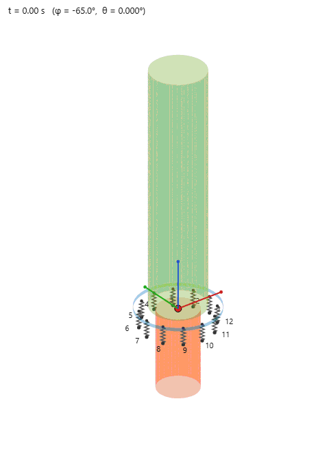

When the base keeps moving
Forced vibration turns the one-time rocking event into a driven response. The amplitude and frequency of the base motion decide whether impacts die away or continue.
Free response becomes a driven response
Chapter 2 followed the body after the base stopped. Here the base acceleration continues, supplying energy that can replace what each corner impact removes.
The result depends on both the forcing amplitude and its frequency relative to the body’s rocking time scale.
Explore forced and free motion together
The playground exposes the complete excitation controls, body parameters, and force and hysteresis plots. Turn forcing off to compare the same setup with free decay.

Full experiment
Rocking Playground
Run the browser solver with bidirectional base excitation, impact dissipation, and response plots.